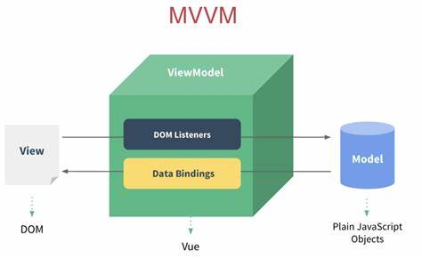
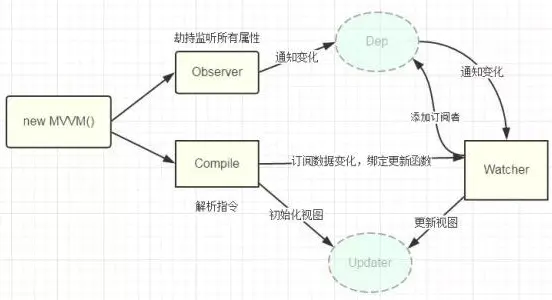
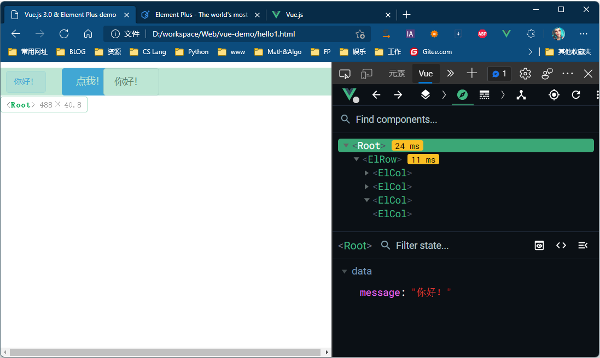
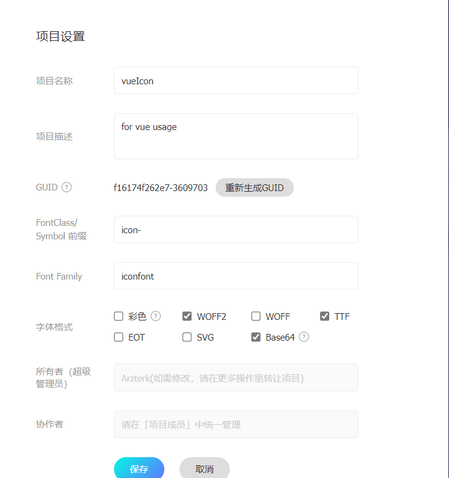

Vue3 学习大纲
[TOC]
1. 前端工程(Big Front End)
-
浏览器工作原理，HTML、CSS、JavaScript(ES6)
-
数据-视图分离：MVC、MVVM

-
前端工程化：(npm、webpack)，组件技术，etc.
-
工具资源：
-
UI库
2. why Vue3
-
代码简洁：
-
数据驱动：动态数据绑定

-
组件化
-
轻量
-
fast!
-
模板语法友好（vs React ）
3. Vue.js 安装
-
install Vue.js
# 使用淘宝源 $ npm config set registry https://registry.npm.taobao.org/ # 最新稳定版 3.2.20 $ npm install vue@next -
安装vue-Devtools【支持Edge/Chrome】
-
去极简插件下载beta版本的Vue devtools(只有beta的支持3.0)
-
7z解压crx后，修改manifest.json中的
"persistent": true，将浏览器的插件允许访问文件URL打开 -
直接用CDN引入https://unpkg.com/vue@next ，如果需要离线调试也可将vue.js下载到本地，（正式发布修改为vue min打包)
<head> <meta charset="UTF-8" /> <meta name="viewport" content="width=device-width,initial-scale=1.0" /> <script src="https://unpkg.com/vue@next"></script> <!-- 可选， import element+ CSS --> <link rel="stylesheet" href="https://unpkg.com/element-plus/dist/index.css"> <!--可选， import element+ JavaScript --> <script src="https://unpkg.com/element-plus"></script> <title>Vue.js 3.0 & Element Plus demo</title> </head> -
F12开搞

-
4. Write Code
4.1 hello world
Demo Code 1
<!DOCTYPE html>
<html>
<head>
<meta charset="UTF-8" />
<meta name="viewport" content="width=device-width,initial-scale=1.0" />
<script src="https://unpkg.com/vue@next"></script>
<title>Hello Vue.js 3.0</title>
</head>
<body>
<div id="app">
<h1>{{message}}</h1>
</div>
<script>
const app = {
data(){
return {
message:"hello, vue!"
}
}
}
const vm=Vue.createApp(app).mount('#app')
</script>
</body>
</html>
4.2 使用 element-plus 美化界面
Demo code II
<!DOCTYPE html>
<html>
<head>
<meta charset="UTF-8" />
<meta name="viewport" content="width=device-width,initial-scale=1.0" />
<script src="https://unpkg.com/vue@next"></script>
<!-- 可选，import CSS -->
<link rel="stylesheet" href="https://unpkg.com/element-plus/dist/index.css">
<!-- 可选，import JavaScript -->
<script src="https://unpkg.com/element-plus"></script>
<title>Vue.js 3.0 & Element Plus demo</title>
</head>
<body>
<div id="app">
<el-row :gutter="20" align="middle">
<el-col :span="4"> <el-tag >{{ message }}</el-tag></el-col>
<el-col :span="3"> <el-button type="primary" @click="change">点我！</el-button></el-col>
<el-col :span="5"> <el-input v-model="message" placeholder="请输入内容"></el-input> </el-col>
<el-col :span="8"></el-col>
</el-row>
</div>
<script>
const App = {
data() {
return {
message: "Hello World",
};
},
methods: {
change() {
// `this` 指向该组件实例
this.message = "你好！"
}
}
};
const app = Vue.createApp(App);
app.use(ElementPlus); // for elementUI
const vm = app.mount('#app')
//vm.change()
</script>
</body>
</html>
Open in browser :smiley:
4.3 vue 生命周期 详解|Vue3组合式 API：生命周期钩子总结 - 掘金
Vue实例有一个完整的生命周期，也就是从开始创建、初始化数据、编译模板、挂载Dom、渲染→更新→渲染、销毁等一系列过程，我们称这是Vue的生命周期。通俗说就是Vue实例从创建到销毁的过程，就是生命周期。
4.3 使用SFC的船新版本！~ vue3 script setup
vue 3 可以直接向模板公开 <script setup> 的上下文，减少在单文件组件（SFC setup.）中使用 Composition API 的繁琐程度
<template>
<div>{{ msg }}</div>
<input ref="input1"/>
<Foo :count="count" @click="inc" @recvMsg="handleMsg" ref="foo"/>
</template>
<script setup>
//直接定义变量，count不用在写`data(){return {count:0}}`
//响应式数据:用 ref 来定义定义基本类型；reactive定义复杂的数据类型
const msg = 'Hello!'
import { ref,getCurrentInstance } from 'vue'
const count = ref(0)
let person = reactive({name:"liudx1985"})
// 直接定义的函数，等于`methods：{inc(){...}}`
const inc = () => {
count.value++ // ref定义的数据访问的时候要多一个.value,reactive 不用
console.log(counter.value,JSON.stringify(toRaw(person))) // 用toRaw变为普通对象，反之toRef
}
// watch 侦听一个 ref
import { watch } from 'vue'
const count = ref(0)
watch(()=> count, (count, prevCount) => {
/* ... */
})
// 定义一个计算属性 item_style
import {computed} from 'vue'
let item_style = ref(computed(
() => {
return /* ... */;
}))
//
// 可以绑定一些常用的生命周期事件
import { onMounted} from 'vue'
onMounted(() => {
/* ... */
})
import {useRouter, useRoute , onBeforeRouteUpdate } from 'vue-router'
const router = useRouter()
// route changed.
onBeforeRouteUpdate(async (to, from) => {
/* router.push({
path: `/`,
}) */
})
//------------------------------------
// 组 件
//------------------------------------
//可以使用 defineProps 和 defineEmits API 声明组件的属性和事件 props 和 emits
import { defineProps, defineEmits } from 'vue'
const props = defineProps({
foo: String,
})
// Watch Props.foo!
watch(
() => props.foo,
(newFoo) => {})
const emit = defineEmits(['change', 'delete'])
emit("change", 'data') // 定义<component @change="xx"/> 接受消息~
// 组件v-modal
// <Codemirror :value="foo" @blue="$emit('update:foo', $event.target.value)" ref="code_editor"/>
// 导入的组件Foo可以直接在template中使用！
import Foo from './Foo.vue'
// Foo 内部定义属性 `props: {msg: String}`,外部通过<Foo :count="count"/>传入 count值
// Foo 内部触发一个this.$emit("recvMsg", data),外部通过<Foo @recvMsg="handleMsg"/>关联处理函数：
function handleMsg(data){
/* ... */
}
// 获取refs
const input1 = ref(null);
onMounted(() => { // ref ~ document.getElementById()
input1.value.value = "fuck!";
})
const foo = ref(null) // AKA: foo.value.xx = yy
const { proxy } = getCurrentInstance();
/*proxy.ctx 中包含了组件中由ref和reactive创建的响应式数据对象,以及以下对象及方法:
proxy.$attrs
proxy.$data
proxy.$el
proxy.$emit
proxy.$forceUpdate
proxy.$nextTick
proxy.$options
proxy.$parent
proxy.$props
proxy.$refs
proxy.$root
proxy.$slots
proxy.$watch
*/
const foo = proxy.$refs.Foofunc() // 调用Foo组件的方法。
</script>
//[可选]使用单独的普通 <script> 块，并使用导出默认值
<script>
export default {
name: 'CustomName',
inheritAttrs: false,
customOptions: {},
}
</script>
5. Vue CLI 快速搭建单页面应用 (SPA)的脚手架
注意本节以下需要npm知识
#install vue-cli
$ npm install -g @vue/cli
#create vue project
vue create hello-world
#install dependencies
npm install
#serve with hot reload at localhost:8080
npm run serve
For a detailed explanation on how things work, check out the guide and docs for vue-loader.
6 Vite：web 开发构建工具(墙裂推荐！):star:
project-name工程 GitHub - vuejs/create-vue: 🛠️ Quickly scaffold a Vue project with npm init vue@3：
6.1. 不需要安装依赖包，直接在指定目录搭建1
# 最新稳定版
$ npm init vue@next # npm 7+，后续需设定<project-name>，开启如typescript\lint\vue-router等
Vue.js - The Progressive JavaScript Framework
√ Project name: ... a
√ Add TypeScript? ... No / Yes
√ Add JSX Support? ... No / Yes
√ Add Vue Router for Single Page Application development? ... No / Yes
√ Add Pinia for state management? ... No / Yes
√ Add Vitest for Unit Testing? ... No / Yes
√ Add Cypress for both Unit and End-to-End testing? ... No / Yes
√ Add ESLint for code quality? ... No / Yes
Scaffolding project in C:\Users\37556\Desktop\a...
Done. Now run:
cd a
npm install
npm run dev
6.2. Write Code
app.vue
<template>
<RouterView></RouterView>
</template>
Open in browser localhost:3000 :smiley:
7. Vue3 常用库的使用:axios|mockjs | vue-router | vutex → pinia
7. 1.axios or Mock.js
npm install axios vue-axios -S npm i mockjs -S
7. 1.1 引入main.js
import axios from 'axios'
import VueAxios from 'vue-axios'
import './mock.js' // optional,for mockjs
//app = createApp(app)
app.use(VueAxios, axios) // 安装插件
//app.mount("#app")
7. 1.2 使用
跨域问题：app根目录下新建文件vue/vite.config.js（vue3 才有） ,然后在里面添加：
module.exports = {
// 跨域
server: {
cors: true, // 默认启用并允许任何源
proxy: {
'/api': {
target: 'http://127.0.0.1:3000', //不要使用localhost:3000
changeOrigin: true,
rewrite: (path) => path.replace(/^\/api/, '')
},
}
}}
// src/common/config.js
const modeUrlConfig = {
'production': {
baseUrl: 'https://jsonplaceholder.typicode.com/'
},
'development': {
baseUrl: '/api' // USE PROXY!
}
}
// export default modeUrlConfig['process.env.NODE_ENV']
export default modeUrlConfig['development']
这里使用配置脚本设置本地调试baseURL,方便修改IP:PORT，发送AJAX代码：
import axios from 'axios'
import baseUrl from 'config.js'
function test() {
axios
.get(baseUrl+"/todos")
.then((r) => {
alert("axios succeed!");
console.log(r);
this.result = JSON.stringify(r.data, null, 2);
})
.catch(function (err) {
console.log(err);
});
}
*如果使用mock:+mock/index.js如下(Mock.js一定要引入到main.js)
import Mock from "mockjs";
Mock.mock('/todos', 'get', {
message: 'success',
list: [
{
'id': 1, 'title': 'xxoo'
},
{
'id': 2, 'title': 'ooxx'
},...
]
})
// Mock.mock('/goods', 'get', Mock.mock({
// 'list|20': [{
// 'id|+1': 1,
// 'title': '@cname',// 商品名称
// 'picUrl': '@image("200x200")', // 商品图片
// 'price': '@float(1, 10000, 2)',// 商品价格
// 'price_cut': '@float(1, 5000, 2)', // 打折价格
// 'left': '@integer(1, 1000)' // 剩余个数
// }]
// }))
export default Mock;
7. 2 vue-router
如果在创建工程时已经引入vue-router，可直接跳过安装和引入
npm install vue-router -S
7. 2.1 引入(新建router/index.js和导入main.js)
//-----------------[router/index.js]---------------------------
import { createRouter, createWebHistory} from 'vue-router'
const router = createRouter({
history: createWebHistory(import.meta.env.BASE_URL),
routes: [{
path: '/',
name: 'Login',
component: () => import('../views/Login.vue')
},
{
path: '/test',// 二级路由映射
name: 'test',
component: () => import('../views/TestPages/index.vue'),
children: [{
path: "/TestPages/Table",
name: "Table",
component: () => import('../views/TestPages/Table.vue'),
},
{
path: "/TestPages/Charts",
name: "Charts",
component: () => import('../views/TestPages/Charts.vue'),
}
]
}
]
})
export default router
//-----------------------[main.js]-----------------------------
import router from './router'
app.use(router) // 安装插件
7. 2.2 使用
两种方式：router-link/router-view 或者router.push等：
<template>
<div class="container">
<div>
<router-link to="/TestPages/Caledar">Caledar</router-link><br>
<router-link to="/TestPages/Weather">Weather</router-link>
</div>
<div>
<router-view />
</div>
</div>
</template>
<script setup>
import { useRouter } from "vue-router";
const router = useRouter();
//B.event callback
function jump()
{
router.push("/home");
}
</script>
7.3. 使用vuex 存储状态
安装方法：
npm i vuex -S可以使用官方推荐的Home | Pinia (vuejs.org)替代, 参考7.4节
7. 3.1. 定义变量
//--[store\index.js]---
export default createStore({
state: {
count: 0,
name: 'Count '
},
//把同步操作放在mutations
mutations: {
inc(state) {
return state.count += 1
},
dec(state) {
return state.count -= 1
}
},
// Action 提交的是 mutation，而不是直接变更状态!
// Action 可以包含任意异步操作
actions: {
incAction({
commit
}) {
commit('inc')
},
decAction({
commit
}) {
commit('dec')
}
},
})
- 3.2. 使用
$store获取变量
<!--ax.vue-->
<template>
<div class="about">
<h2>{{$store.state.count}}</h2>
<button @click="$store.commit('inc')">+</button>
<button @click="$store.commit('dec')">-</button>
<!-- or use dispatch async-->
<button @click="$store.dispatch('incAction')">+</button>
<button @click="$store.dispatch('decAction')">-</button>
</div>
</template>
- 3.3.
mapMutations,mapActions,mapState映射函数[可选]
//@Xx.vue
<script>
import {
mapMutations,mapActions,mapState
} from "vuex"
export default {
methods: {
...mapMutations(['inc', 'dec']),
...mapActions(['incAction','decAction'])
},
computed: {
...mapState(['name']), // 可以直接使用name~
},
watch: { // 侦听器的写法：
'$store.state.count':function(oldVal, newVal){
console.log(`changed count${oldVal} to ${newVal}`)
}
},
}
</script>
7.3.4. mapGetters函数[可选] 映射 store\index.js中相应的 *getter*函数
//@store\index.js
export default createStore({
state: {
count: 0,
name: 'Count '
},
/* 定制读取函数*/
getters: {
countG(state) {
return state.count += 100
}
},
...
}
//------
//-@Xx.vue
<template> <h2>{{name}}:{{count}}~{{getCount}}~{{countG}}</h2> </template>
//------
<script>
export default {
...
computed: {
/* 使用定制读取函数*/
getCount() {
return this.$store.getters.countG
},
...mapState(['name','count']), // 可以直接使用count
...mapGetters(['countG'])
}
...
}
<script>
7.4 使用 Pinia 中文存储状态
安装pinia和持久化插件pinia-plugin-persist：
npm install pinia ‘pinia-plugin-persist’ -S
7.4.1 定义store
在@/store/index.js里面导出 pinia（根存储）store根存储,后面将其传递给应用程序； 和自定义的状态仓库store :
// pinia usage@ https://zhuanlan.zhihu.com/p/467177317
import { createPinia, defineStore } from "pinia";
//创建一个 pinia（根存储）store
const store = createPinia()
import piniaPersist from 'pinia-plugin-persist'
store.use(piniaPersist) // 持久化插件
// 供main.js挂载应用程序app
export default store
//参数1：定义一个状态[仓库]的唯一id名，Pinia会将所有的容器挂载到根容器；参数2：选项对象
export const useStore = defineStore('main', {
state: () => {
return {
counter: 3,
todos: [
{ id: 0, value: 'learn javasript' },
{ id: 1, value: 'learn vue3' },
{ id: 2, value: 'learn uniapp' }
],
}
},
persist: {// 开启数据缓存到Localstorage，,刷新界面会读取里面的数据，不会丢失
enabled: true,
strategies: [
{
key: 'todos',
storage: localStorage,
}
]
}
})
7.4.2 Main.js引入store
main.js导入上面定义的根存储 store
import store from './store'
const app = createApp(App)
app.use(store) // 挂载pinia根存储对象store
app.mount('#app')
7.4.3 使用store
在页面使用useStore即可获取状态对象
import { useStore } from '@/store'
import { storeToRefs } from 'pinia'
const store = useStore()
const { counter, todos } = storeToRefs(store) # 将仓库的对象转换为响应式数据，方便挂载到template等
console.log(store.counter,todos) // 直接使用counter、转ref使用todos
counter.value +=1;
7.5 icon 图标库
7.5.1 iconfont-阿里巴巴矢量图标库
- iconfont-阿里巴巴矢量图标库 建立项目

-
添加图标
找到目标图标库，以Chrome为例，F12控制台中复制以下4行代码，然后 回车键。这时全部的图标添加到购物车了。图标多的话会有时间延迟。 var iconList = document.querySelectorAll('.icon-gouwuche1'); for(var i = 0; i < iconList.length; i++) { iconList[i].click(); } -
购物车 - 添加至项目，选择项目名称
-
在我的项目选中 - 下载至本地。
-
将代码放在工程的static目录：

-
修改
iconfong.css中引用iconfont.ttf的位置：url('/iconfont/iconfont.ttf?t=1661398304432') format('truetype'); -
使用icon 名称引用:
<i class="icon iconfont icon-swap"></i> <u-icon name="arrow-rightward" color="green" size="24"></u-icon>
7.5.2 使用xicons - Icons for Vue & React [推荐使用]
这个可以使用很多库的ICON:SVG Vue/React components integrated from
fluentui-system-icons,ionicons,ant-design-icons,material-design-icons,Font-Awesome,tabler-iconsandcarbon.
# setup with vue3 ：可选部分库
npm i -D @vicons/fluent
npm i -D @vicons/ionicons4
npm i -D @vicons/ionicons5
npm i -D @vicons/antd
npm i -D @vicons/material
npm i -D @vicons/fa # font awesome
npm i -D @vicons/tabler
npm i -D @vicons/carbon
# 安装Utils
npm i -D @vicons/utils # vue3
<script setup lang="ts">
import { Icon } from '@vicons/utils' // vue3
import Album24Regular from '@vicons/fluent/Album24Regular'
// ELSE
</script>
<template>
<div class="wrapper">
<Icon color="hsla(160, 100%, 37%, 1)" size="36">
<Album24Regular />
</Icon>
</div>
</template>